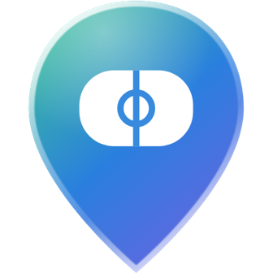

RinkfolioPrivacy Policy
Effective October 26, 2026
Rinkfolio is an app for finding ice rinks and keeping track of where you've skated. It's made by Iris Yuan ("we", "us"), based in California, USA. This policy explains what we collect, why, who can see it, and how to delete it. Questions: rinkfolioapp@gmail.com.
What we collect
- Phone number. Used only to sign you in with a texted code. It is never shown to other skaters.
- Profile. Your username, and anything you choose to add: name, profile photo, bio, disciplines, favorite jump and spin, signature move, skating club, when you started skating, and home rinks.
- Your lists and visits. Rinks you want to visit, rinks you've visited, and visits you log, with their dates, notes and photos.
- Connections. Who you follow, who follows you, who you've blocked, and reports you send.
- Location. If you allow it, your phone's location is used on your device to show nearby rinks and distances. We don't store your location on our servers.
- Crash reports. If the app crashes or freezes, a report is sent so we can fix it: what the app was doing, the app and iOS versions, and the phone model. It doesn't include your name, username, phone number, account, IP address, location, or anything you've posted.
We don't use advertising, ad tracking, or third-party analytics, and we don't sell your information. Crash reports are used only to fix problems, never to track you.
Who can see what
- Other Rinkfolio users can see your username, profile, home rinks, want-to-visit and visited lists, follower and following counts, and visits you mark as visible to Everyone (with their notes and photos).
- Only you can see visits you mark Only me, your phone number, who you've blocked, and reports you've sent.
- Skaters you block, and skaters who block you, can't see each other's activity.
How we use it
Only to run the app: to sign you in, show your lists and profile, show other skaters' public visits on rink pages, help you find skaters, and review reports to keep Rinkfolio safe. We may email or text you only about your account or a report.
Services we use
- Supabase stores your account and app data and photos.
- Twilio sends sign-in codes to your phone number.
- Sentry receives crash reports.
- Resend emails us when a skater is reported, with the usernames involved and the reason.
- Apple provides maps and place names in the app.
These services process data on our behalf and only to provide their service. We may also share information if required by law, or to protect the safety of our users.
How long we keep it
We keep your information while you have an account. When you delete your account, your profile, lists, visits, notes, photos, follows and blocks are deleted right away. Reports you sent about others may be kept, without your name attached, so we can deal with repeat problems. Backups held by our providers expire within a few weeks.
Your choices
- Edit or remove profile details, visits, notes and photos at any time in the app.
- Make any visit private with Only me.
- Turn location off in your phone's Settings.
- Delete your account in Profile › Settings › Delete account, or by emailing us.
- Ask us for a copy of your information, or ask us to correct it, by email.
California residents
You have the right to know what personal information we collect, to delete it, to correct it, and not to be treated differently for using these rights. We don't sell or share personal information for advertising. Email us to make a request.
Children
Rinkfolio is for people 13 and older. We don't knowingly collect information from children under 13. If you believe a child under 13 has an account, email us and we'll delete it.
Security
Data is sent over encrypted connections, and access to it is restricted so each person can only change their own information. No system is perfectly secure, but we work to protect yours.
Changes
If we change this policy, we'll update the date at the top. For significant changes, we'll let you know in the app.